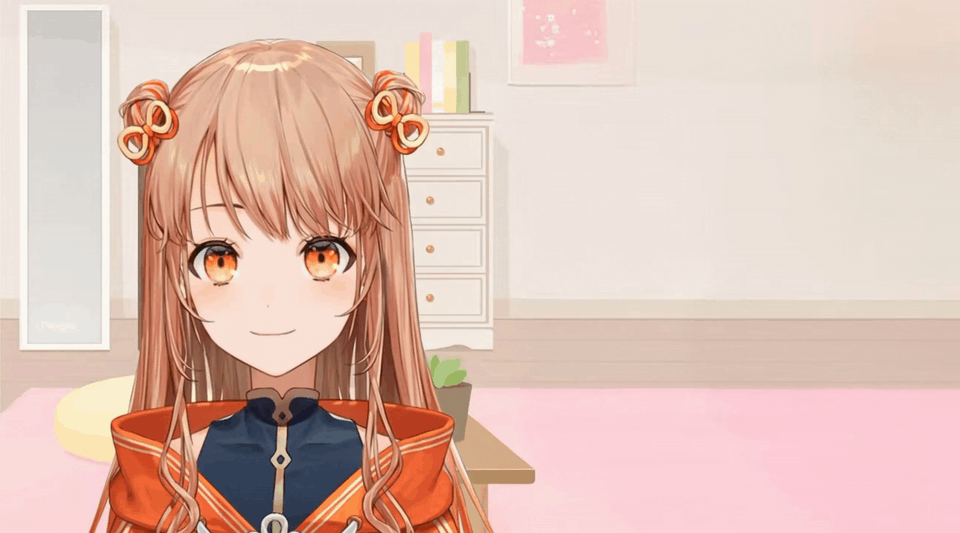

直播画面加载中…

弹幕数
0/100
已办
0
漏办
0
误伤
0
好感度
50
comment
BGM
正常
魔性
洗脑
画面
皮套一
皮套二
皮套三
HINOME BIRTHDAY · 2022.10.12
火羽ひのめ 生日会·房管执勤手册
现在是 2022 年 10 月 12 日，火羽ひのめ出道第二年的生日会直播间。你是她今晚的房管。
右侧面板每条弹幕出现后 2 秒内可点击。
黑粉弹幕点了加好感度。
漏掉会上到主播弹幕机，并扣好感度。
误伤正常观众也扣好感度。
警惕随时蟑螂，拍掉+1好感度，跑掉-0.5。
好感度归零即失职，撑过 100 条弹幕即守护成功。
开始执勤
S
金牌房管
弹幕数
0
已办
0
漏办
0
误伤
0
好感度
0
再来一次
需要启用 JavaScript 才能开始执勤。